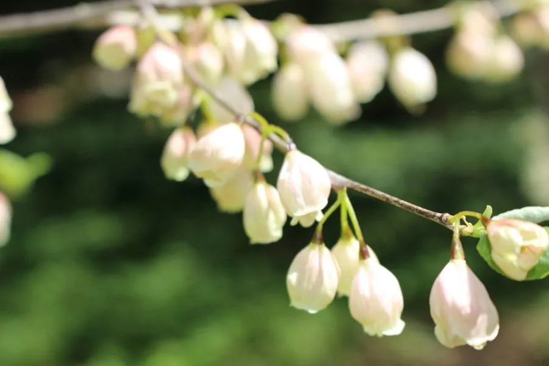

灌木与花木 · 植物界
马醉木 Pieris japonica

杜鹃花科常绿灌木，春季开白色壶状小花，新叶红色，全株有毒，是南方庭院与林下常见的观花灌木。
- 分类
- 门被子植物门纲木兰纲目杜鹃花目科杜鹃花科属马醉木属
- 栖息环境
- 山地林下与庭院，喜温暖湿润、半阴和酸性土
- 地理分布
- 原产日本；中国华东、华中、西南等地栽培
- 保护级别
- 暂无评估；中国未列入国家重点保护野生植物名录
物种志
马醉木为杜鹃花科马醉木属常绿灌木，高 1–4 米，枝条直立，幼枝红色。叶互生，披针形至倒披针形，革质，边缘具细锯齿，新叶常呈红色。总状花序顶生或腋生，花冠壶状，白色至淡粉色，花期 3–5 月；果实为蒴果，球形，果期 8–10 月。
马醉木原产日本，中国华东、华中及西南有栽培，喜温暖湿润、半阴的环境，耐寒性较强，适宜疏松肥沃、排水良好的酸性土壤。它春季白花成串、新叶鲜红，是庭院与林下常见的观花灌木；因枝叶有毒，马误食后会醉倒，故名马醉木。全株含木藜芦毒素，不可食用，修剪时应避免汁液接触眼睛与伤口，北方盆栽冬季需移入室内。
形态与习性
- 株高1–4 米，幼枝红色
- 花期3–5 月，花冠壶状白色
- 果期8–10 月，蒴果球形
- 光照喜半阴，也耐散射光
- 水分喜湿润，忌积水
- 土壤疏松肥沃、排水良好的酸性土
- 主要用途庭院与林下观花，盆栽观赏
趣味知识
- 马醉木的枝叶有毒，马误食后会像喝醉一样，因此得名。
- 它春季开白色壶状小花，花序成串下垂，十分精致。
- 马醉木的新叶常呈红色，与绿叶相衬，观赏性强。
- 全株含木藜芦毒素，修剪时需戴手套、避免汁液入眼。